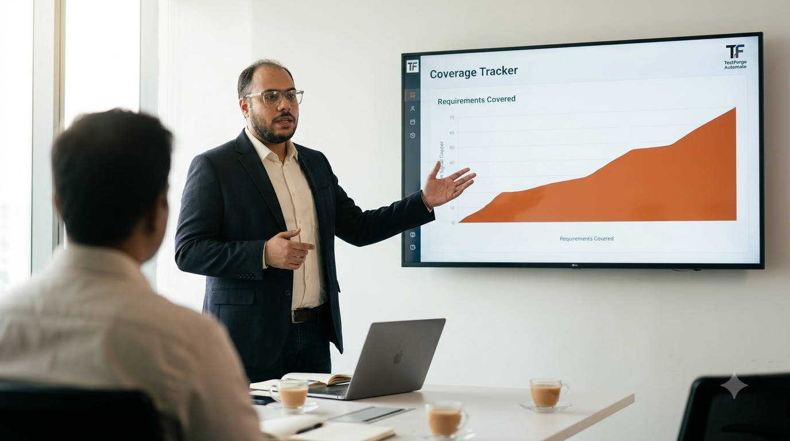
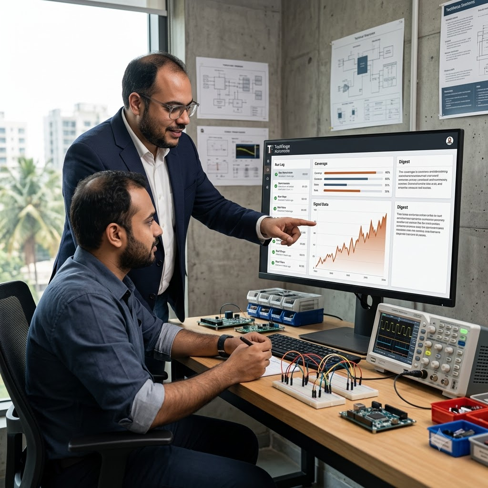
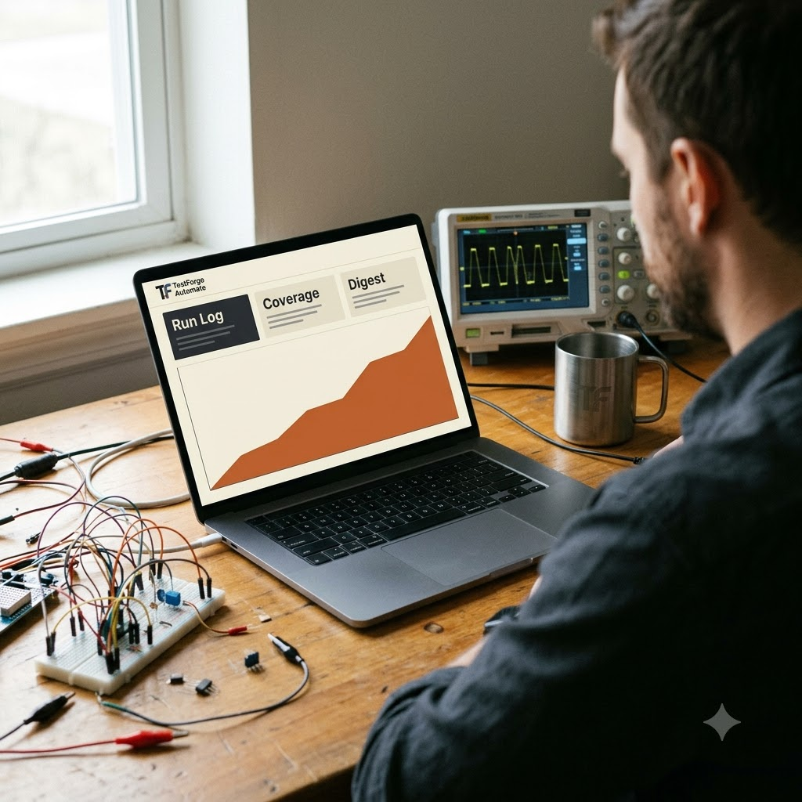
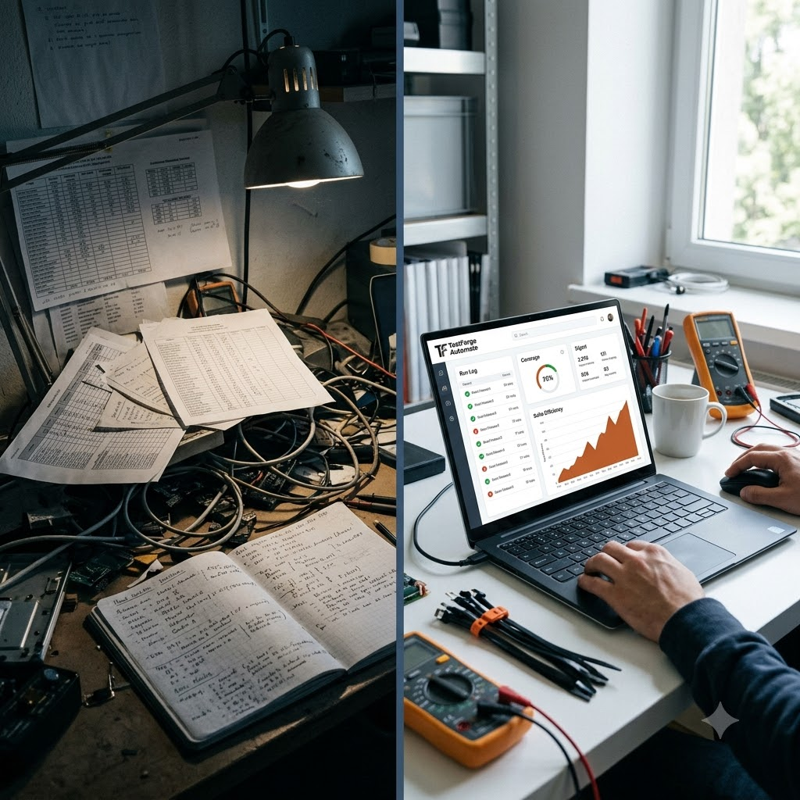
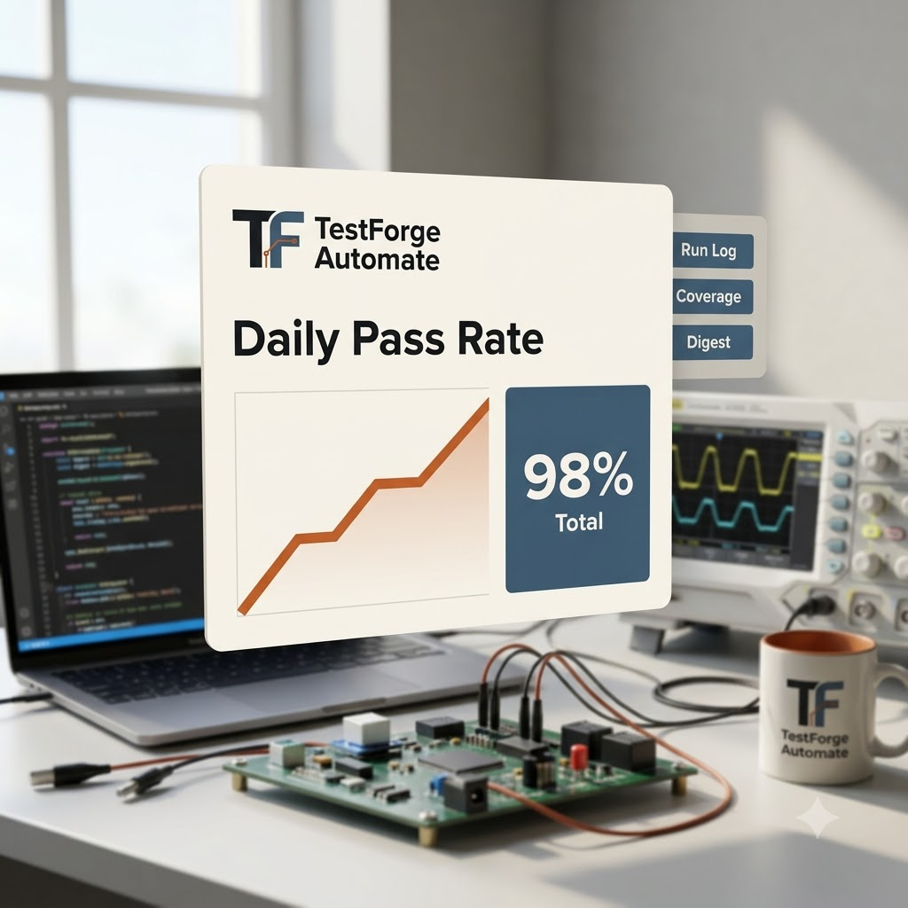
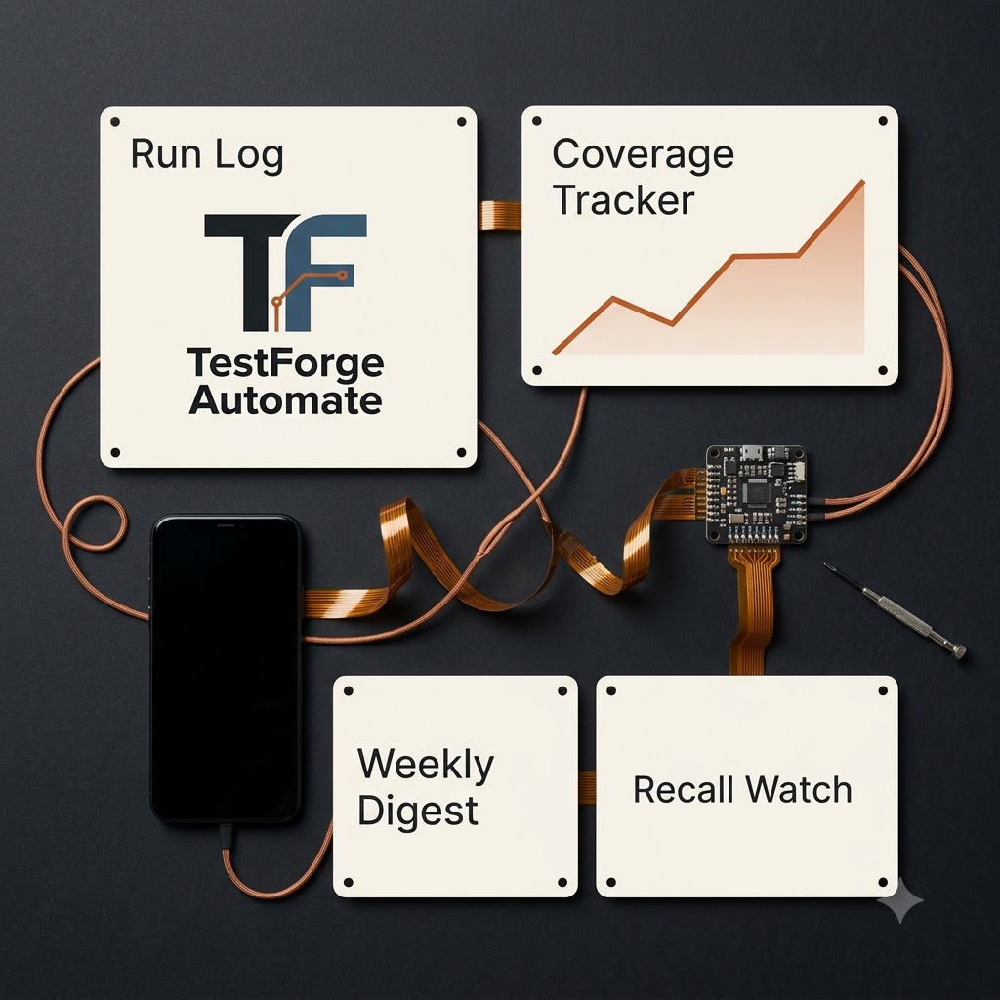
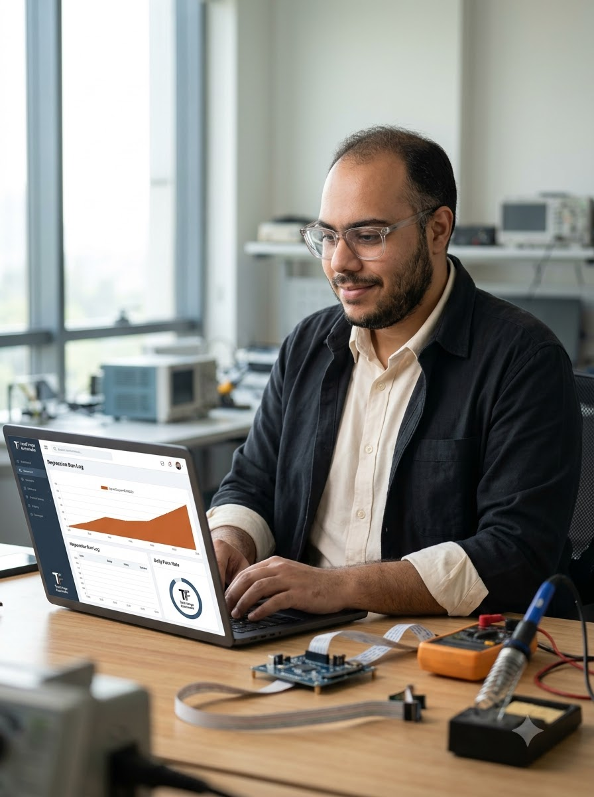

Test case intake form with clean register
You send me your manual regression set and I map it to requirements.
TestForge Automation — HIL & CANoe test automation
Fixed-scope test automation for small embedded and auto electronics teams, without a full-time test lead.
Book a 20 minute call
The problem
The services
Each one is a small, fixed piece of the same job: get the repeatable checks out of your hands.
You send me your manual regression set and I map it to requirements.
The repeatable checks are automated in Python and Robot Framework.
You get a test case register plus a weekly run report.
One price: Rs 30,000 a project. It covers everything the three projects do.
In practice





How it works
You send me your manual regression set.
I map it to requirements and automate the repeatable checks in Python and Robot Framework.
I hand back a test case register plus a weekly run report.

TestForge Automation
I started TestForge Automation after too many manual regression nights.
I kept watching the same checks get run by hand before every release. So I built a better way from that: you send me the set, the repeatable checks run themselves, and the register and the weekly report come back to you.
Contact
Booking comes first. WhatsApp and email work just as well.